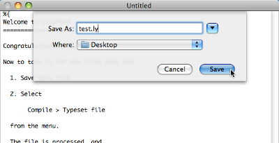
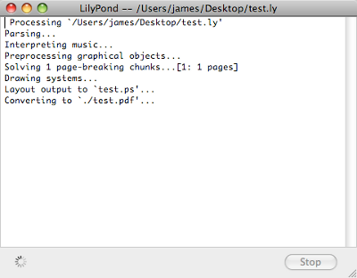
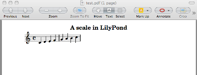

MacOS X
Note: LilyPond is a text-based music engraver; it is more similar to a programming language than a graphical score editing program. Before downloading LilyPond, please read about our Text input.
Packages
Download
-
 MacOS X x86: LilyPond 2.16.1-1
For MacOS X 10.4 or higher, running on Intel CPUs (if in doubt,
use this).
MacOS X x86: LilyPond 2.16.1-1
For MacOS X 10.4 or higher, running on Intel CPUs (if in doubt,
use this).
-
MacOS X PPC: LilyPond 2.16.1-1
For MacOS X 10.4 or higher, running on G3 and G4 CPUs (old Apple
computers).
Install
Double-click the downloaded file, then drag it to wherever you want.
Uninstall
Delete the LilyPond.app folder.
Compiling a file
Note: These instructions assume that you are using the LilyPond application. If you are using any of the programs described in Easier editing, please consult the documentation for those programs if you have any problems.
Step 1. Create your ‘.ly’ file
Double click the LilyPond.app, an example file will open.
From the menus along the top left of your screen, select
File > Save.
Choose a name for your file, for example ‘test.ly’.
Step 2. Compile (with LilyPad)
From the same menus, select
Compile > Typeset.
A new window will open showing a progress log of the compilation of the file you have just saved.
Step 3. View output
Once the compilation has finished, a PDF file will be created with the same name as the original file and will be automatically opened in the default PDF viewer and displayed on your screen.
Other commands
To create new files for LilyPond, begin by selecting
File > New
or File > Open to open and edit existing files you have
saved previously.
You must save any new edits you make to your file before you
Compile > Typeset and if the PDF file is not displayed
check the window with the progress log for any errors.
If you are not using the default Preview PDF viewer that comes with the Mac Operating system and you have the PDF file generated from a previous compilation open, then any further compilations may fail to generate an update PDF until you close the original.
Running on the command-line
Note: If you are happy with the GUI, then please ignore these instructions.
MacOS X on the command line
The most convenient way to run lilypond scripts is by setting up “helper” scripts of your own.
-
Create a directory to store these scripts,
mkdir -p ~/bin cd ~/bin
-
Create a file called
lilypondwhich contains#!/bin/bash exec DIR/LilyPond.app/Contents/Resources/bin/lilypond "$@"
Note: DIR will generally be
/Applications/ -
Create similar files
lilypond-book,convert-ly, and any other scripts you wish to use, by replacing thebin/lilypondwithbin/convert-ly(or other program name). -
Make the file executable,
chmod u+x lilypond
-
Now, add this directory to your path. Modify (or create) a file
called
.profilein your home directory such that it containsexport PATH=$PATH:~/bin
This file should end with a blank line.
Invoking individual scripts
The scripts — such as lilypond-book, convert-ly,
abc2ly, and even lilypond itself — are included
inside the .app file for MacOS X.
Scripts can also be run from the command line by invoking them directly:
path/to/LilyPond.app/Contents/Resources/bin/lilypond
The same is true for all other scripts in that directory, such as
lilypond-book and convert-ly.
Legalese
All logos and product images are copyright and trademark acknowledged.
The “X image” is not a registered trademark. It was created by Nihonjoe and CyberSkull, and placed under the GNU Free Documentation License version 1.2 or later. We found the image on this Wikimedia Commons page.
{kind=link}
Other languages: česky, deutsch, español, français, magyar, italiano, 日本語, nederlands, 中文.
About automatic language selection.